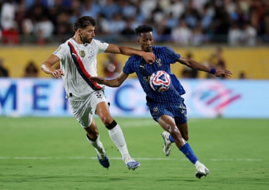
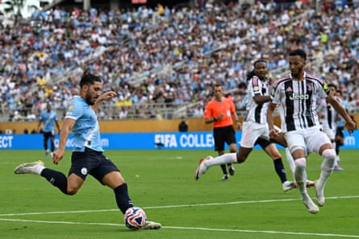

Guardiola upbeat
A manager rejuvenated is no overblown assessment of Pep Guardiola, whose friendly wave to this correspondent during a morning training session at Manchester City’s Boca Raton camp was emblematic of a man who oozed energy and commitment for the challenge of elevating his side again throughout the Club. World Cup. Immediately after the winding blow of Monday’s 4-3 defeat by Al-Hilal in Orlando, the 54-year-old blended disappointment with a measured optimism, fairly pointing to how if chances had been taken then City would be facing off against Fluminense in Friday’s quarter-final, back at the Camping World Stadium.
Overall, ruthlessness has returned
Going into the last-16 tie with Al-Hilal City’s 13 goals were the most of the three-game group stage. Three more against Simone Inzaghi’s team took City’s tournament average to four a match. This is a number that should win most games, so when Guardiola rued how a lack of ruthlessness caused their elimination this was right on the night but an anomaly given how Erling Haaland (three), Phil Foden (three), Jérémy Doku (two), Ilkay Gündogan (two), Rayan Cherki, Bernardo Silva, Claudio Echeverri, Oscar Bobb and Savinho etched their names on the scoresheet at the matches at Philadelphia’s Lincoln Financial Field, Atlanta’s Mercedes-Benz Stadium and the Camping World Stadium. Scoring is not the problem, defending is …
Sluggish Dias and a midfield problem
Rúben Dias, the 2020-21 Football Writers’ Association’s Footballer of the Year, is a regal centre-back whose professionalism is valued by Guardiola but Dias is also the slowest of a sluggish backline caught out too many times in the US. This was how Al-Hilal prospered, Malcom’s breakaway strike emblematic of how City were knifed through by simple short passes, then a clear run in. As Bernardo Silva says: “Most teams that beat us play this way. We’ve played against teams like this for eight or nine years and we didn’t control those situations [against Al-Hilal]. They are normally situations where we recover very well by being aggressive in the first five or six seconds to recover the ball quickly. This time, they managed with one or two passes to create danger in behind. That was the main problem.” When Manuel Akanji came on his pace was vital and he rescued City, a sprint back to slide-tackle Nasser al-Dawsari in the area a telling illustration. But Gündogan, Tijjani Reijnders and Rodri lacked the sharpness Silva said City need to stymie opponents. The midfield has to aid the defence.
Rúben Dias has looked off the pace in the US.Photograph: Lee Smith/Reuters
Rodri injury a concern
The vacant expression worn by Rodri when he was forced off against Al-Hilal pointed to real concern that this could be a serious setback after seven months of rehabilitation from an anterior cruciate ligament injury. The severity of the problem is yet to be clarified but to see the peerless holding midfielder replaced after he had come on as a substitute and then to hear Guardiola, unsolicited, confirm the setback was to be returned to last year. City’s season foundered when Rodri went down against Arsenal in late September. Hopefully he sustained nothing more than a knock and the silver lining of elimination will be a chance to recover in the six or so weeks before the opening Premier League game, at Wolves on 16 August. Rodri is so vital to the City project and so you wonder at his manager’s ability to replace him in the long term should he have to. Last season, Guardiola failed.
Foden rejuvenated
The “Stockport Iniesta” was City’s A-list performer in the US, an invigorating brew of finishing, creativity and I-mean-business after a poor season. Phil Foden, at 25, has to take over the Kevin De Bruyne mantle as the orchestrator of the attack who plays colleagues in and scores when it matters. The loss of the departed Belgian, who is in the pantheon of greatest domestic top-flight footballers, cannot be overstated but Guardiola believes in Foden, who had his mojo back Stateside. This cast Foden’s exclusion from the XI the Catalan sent out against Al-Hilal as a puzzle that deepened when City needed a winner in normal time. Only when Rodri was hurt did Foden come on. Watch again his extra-time volley: the poise of the run and timing, the spin placed on the ball to score from a severely acute angle. High-class.
Rayan Cherki has made an impression since signing this summer.Photograph: Phelan Ebenhack/AP
Cherki, Reijnders and Aït-Nouri show promise
A £100m-plus early-summer splurge brought Rayan Cherki, Reijnders and Rayan Aït-Nouri in to bolster Guardiola’s squad, and all impressed. Cherki is a forward with vision whose spikiness can be a boon in a City unit lacking devil and edge. In Reijnders, Guardiola has landed a silky No 8 who can operate as a No 6: the Dutchman’s task is to take over from Gündogan/De Bruyne as a scheming midfield force who contributes goals – 10 in 37 Serie A appearances for Milan last season suggests he can. Aït-Nouri, at left-back, has the speed needed at the back and a love of driving at and dribbling past defenders in the final third.